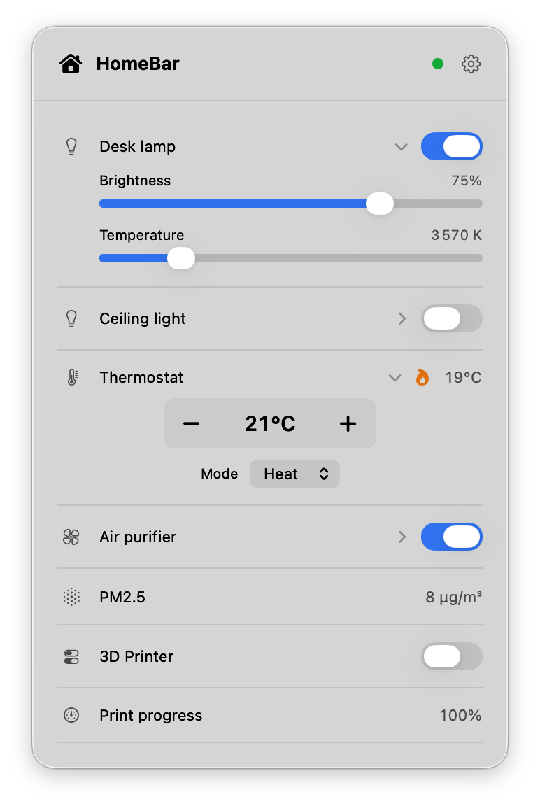

HomeBar
A lightweight, native macOS menu bar dashboard for Home Assistant.
Requires macOS 14 (Sonoma) or later. Apple Silicon.

A lightweight, native macOS menu bar dashboard for Home Assistant.
Requires macOS 14 (Sonoma) or later. Apple Silicon.
